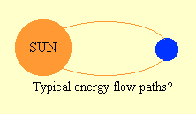
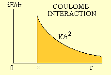
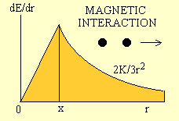
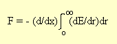
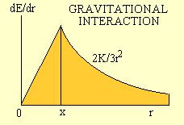

THE PHYSICS OF CREATION: LECTURE NO. 2
Gravitation: An Introduction
Copyright © Harold Aspden, 1998
Late 19th Century Status
One of the greatest mysteries of physics bequeathed to us from the 19th century was the problem of explaining what causes gravitation. Since then there has been no discovery, whether by experiment or astronomical observation, providing us with any new facts by which to decipher what attribute of Nature determines G, the Constant of Gravitation. The only hint we have of something new concerning gravitational action is the evidence of a slightly different redshift observed in radiation from certain galactic domains that are very close to one another, a finding which implies that gravitation may have a range of action limited to matter belonging to the same galactic domain.
My opinion is that the history of the 20th century will show that somewhere in their deliberations those who probed this question of gravitation went adrift and failed to see the pathway that they had to follow. That pathway should have been clear enough to see by those reviewing the position at it stood late in the 19th century.
At that time it was felt that Newton's Law of Gravitation provided the necessary formulation of the interaction as between matter. There is a force that varies inversely as the square of separation distance and as the product of the masses of the interacting bodies. The way in which planets interact with one another, in distorting their elliptical orbits around the sun and developing what was observed as a slow but progressive advance or retrograde motion of the perihelion of the planetary orbit, was well understood.
The advance of perihelion is the progressive slow change in orientation in space of an elliptical planetary orbit as its major axis alters direction very slightly from one planetary cycle to the next. For example, the effect of Jupiter acting upon the orbit of Venus promotes a component of perihelion advance of 656.06924 seconds of arc per century. Saturn has very little effect on Venus, accounting for an advance of some 7.92070 seconds of arc per century. Calculation of such precise values makes one suspicious, as they depend upon knowledge of the relative mass of those planets with respect to the solar mass, and those relative mass values were not known to such a high degree of precision. However, those figures for the perihelion advance rate were duly adopted and recorded, I believe, by G M Clemence, as in Reviews of Modern Physics, v. 19, p. 361 (1947) based on best-fit rounded estimates of those planetary mass ratios.
From all this one can see why discrepancies between what is observed and what is calculated using Newtonian theory were the subject of intense interest in the 19th century and early 20th century. They provided guidance which helped astronomers to estimate the masses of planets which had no satellites and guidance in encouraging search for other planets that were still to be discovered. Ultimately they were to serve us in looking more closely at the manner in which Newton's Law of Gravitation, as a 'force' law, was being applied.
However, in the event, the status of gravitation late in the 19th century was that everything was in good order and the onward research into that phenomenon was progressing along a sensible track. Newton's Law provided the formula for the action of gravity and all that was needed was the discovery of how that law might be linked to the electrodynamic processes of the kind introduced by Maxwell's interpretation of the electromagnetic properties of the aether.
However, that planetary perihelion topic became the focus of attention. The above high measure of perihelion advance for Venus is, incidentally, offset by a retrograde motion attributable to the Earth-Moon system of 564.1755 seconds of arc per century, and one of the order of 100 and more seconds of arc per century attributable to planet Mercury. The mass of Mercury, was not known with sufficient precision for the late 19th century cosmologists to see need for concerns that could put Newton's Law of Force in doubt, but they were attentive to a small anomalous advance of perihelion precession of planet Mercury. Indeed, although Mercury had a mass that was uncertain, that mass did not feature in the theoretical determination of the rate of its perihelion precession and, in being the closest planet to the sun and taking only 88 days per orbit, it provided the best evidence of a perihelion anomaly. This was especially so, as Mercury has a very elliptical orbit, its eccentricity being 30 times that of Venus, the planet next closest to the sun.
The status close to the end of the 19th century, as relevant to our discussions here concerning gravitation, can be summarized by three quotations of special interest:
"To form any notion at all of the flux of gravitational energy, we must first localize the energy."
Oliver Heaviside, the inventor of the distortionless telegraph transmission line, author of Electromagnetic Theory, 1893.
"It is true that there are a few outstanding discrepancies which cannot yet be said to have been completely accounted for by the principle of gravitation....; and we may suppose that the few difficulties still outstanding will be finally cleared away, as has been the case with so many other seeming discrepancies. But even when these admissions have been made, are we in a position to assert that the law of gravitation is universal throughout the solar system? .... As a whole, the comet is very amenable to gravitation, but what are we to say as to the tails of comets, which certainly do not appear to follow the law of universal gravitation? The tails of comets, so far from being attracted towards the sun, seem actually to be repelled from the sun. Nor is even this an adequate statement of the case. The repulsive force by which the tails of the comets are driven from the sun is sometimes a very much more intense force than the attraction of gravitation. ..... So long as the sun shrinks in dimensions there will be an energy available towards the maintenance of its radiation. The termination of the supply will be reached when the sun has become so far solid that gravitation is no longer effective in reducing its volume at a sufficiently rapid rate."
Quotation from pp. 199-200 and p. 373 of In the High Heavens by Sir Robert S. Ball, Cambridge University Professor of Astronomy, published in 1894.
"The Space and Time Propagation of Gravitation", the title of a paper by a German schoolmaster, Paul Gerber, which formulated the rate of perihelion advance of the orbit of planet Mercury, indicating a rate of 43 seconds of arc per century on the assumption that gravitational action propagates at the speed of light. It appeared in Zeitschrift f. Math. u. Phys., vol. 43, p.93 (1898).
Physical Science: Cambridge 1897-1904
As we entered the 20th century, gravitation soon became the exclusive province of the cosmologist, the person who devotes his or her attentions to theorizing about what is observed by astronomers. The more general interests of the physicist were soon to be monopolized by the enormous advances that were emerging as the atom began to lay bare its secrets.
So those three points concerning gravitation, as just listed, were not seen in their proper context. Sir Edmund Whittaker, in his 'A History of the Theories of Aether and Electricity', first published in 1910, a history which embraces also the subject of gravitation, did not even mention Gerber and, though Heaviside was mentioned, that mention was only in the context of electromagnetic energy transfer. As to the motion of comets and that powerful anti-gravitational effect exhibited by their tails, that seems also to be something that was ignored and forgotten.
The 1897 to 1904 scene is described in W C D Whetham's 'The Recent Development of Physical Science' which appeared in 1904. As was Sir Edmund Whittaker, William Cecil Dampier Whetham was a Fellow of the Royal Society and a Fellow of Trinity College, Cambridge.
Gerber was not mentioned in Whetham's book but Heaviside had a mention for his contribution, along with Thomson and Searle, by reference to the calculation of the quantitative value of the inertial effects which electrical action contributes to a moving charge.
Whetham began by explaining that the great advance in Physical Science of the then-recent years had developed chiefly in two directions. There were two schools of research which, "to some extent, were the expression of opposite tendencies." One, which concerned the conditions of physical and chemical equilibrium, had emerged chiefly from the great work of the late Willard Gibbs, of Yale University in the United States." The other was the developing knowledge of the mode by which electricity is conducted through gases, mainly due to the efforts of J J Thomson, Professor of Experimental Physics at Cambridge. Owing to this latter development "students from almost all civilised countries have come to Cambridge as to the centre of this branch of physical research, and many of them are now carrying forward their investigations elsewhere, by methods learnt in the University of Newton, Clerk-Maxwell, and Stokes."
So here we have Cambridge becoming the focal point for the advancement of knowledge concerning the ionization of atoms, just a few years after the publication in 1894 of that book 'In the High Heavens'. In that book Sir Robert S Ball, Cambridge Professor in Astronomy, had discussed why it was that the sun would radiate energy shed by gravitational contraction until one day its contraction would be arrested as it cooled to the point of solidification.
There was nothing in that book that even hinted that electrical phenomena, such as ionization of the gaseous medium forming the sun, could affect the arrest of the role of gravitation in bringing about the ultimate termination of solar radiation. Thermodynamic equilibrium was the sun's destiny as it progressively cooled into its ultimate solid form.
Now, in writing this some one hundred and more years on from the publication of that book, I well know that we need to remember that in the nineteenth century there was much that had yet to be discovered about atoms and electricity. It was in 1827 that a German high-school teacher Georg Ohm discovered the relationship between voltage and current in a metallic conductor and it was in 1833 that Faraday discovered the laws of electrolysis. However, the electrical properties of metal and electrolytic solutions are not evidence of ionization in a gas and the sun was seen as being so hot that it could only be of gaseous constitution. Nevertheless, one would expect Sir Robert Ball to be aware of the discoveries of William Crookes. Crookes had discovered the element thallium in 1861 and while investigating this he noticed the radiometer effect, which in turn led to his work on the discharge of electricity in gases and the discovery of what he called radiant matter. Crookes was knighted for his work in 1897, so one must assume that, contemporary with the writing of Sir Robert Ball's book, the scientific community had knowledge of ionization in gaseous media.
Why, one must then wonder, was it not recognized that the sun had to be an ionized medium rather than just a very hot gaseous body pending eventual cooling and solidification? Crookes' name was not mentioned in the index of that book. Accordingly, one must assume that, in 1894, the students at Cambridge having interest in astronomy were indoctrinated in the belief that the energy of the sun came from its gravitational contraction, which had heated it sufficiently to cause it to radiate energy until one day it would eventually solidify and no longer illuminate and heat our planet.
Now, my theme here concerns gravitation, and I am all too conscious of the fact that an ionized fluid, whether gaseous or liquid, can pose an interesting question if the free positive ions happen to be heavier than the free negative ions. Newton's law suffices to tell us that two heavier masses at a given separation distance will act on one another to set up a higher rate of gravitational acceleration than applies as between two lighter masses. It is obvious, therefore, that an ionized fluid, if that is the form of a large astronomical body, will be the seat of an action, as moderated by the collisions of the molecules or atoms forming that fluid, in which the charge polarity of the heavier ion form will tend to concentrate centrally within that body. Long before there is any solidification owing to cooling and eventual deionization, there will be an intermediate equilibrium phase associated with that state of ionization. The equilibrium will arise when the gravitational potential, a negative quantity, is exactly balanced by the resulting electric potential set up by what amounts to a positive charge distribution within the spherical host body, balanced electrically by an enveloping spherical shell of negative charge.
That is the logical picture of the sun that should have been in the minds of astronomers in the last decade of the 19th century. It implies a fascinating fact, namely that the mass density of the sun has to be uniform throughout virtually its entire form. The reason is that, given that it is hot throughout, the production of ions will be dependent upon contact as between its constituent atoms and, mass density being set by that contact threshold, if too many ions are produced the gravitational attraction will generate an excess of electrical repulsion and, if too few, the gravitational attraction will prevail, thereby assuring equilibrium at a constant mass density.
Now, to add some weight to that statement, I will now pose two questions which, 100 years on from that 1890 period, warrant answers.
Firstly, why is it that today's textbooks on cosmology are silent on this issue of there being a radial electric field set up by the gravitationally-induced radial separation of positive and electric charge in stars?
Secondly, bearing in mind that prediction of a uniform mass density and the fact that even 100 years ago cosmologists knew that the mass density of the sun is of the order of 1.4 gm/cc, why is it that physicists have failed to see how this tells us something about the atoms which constitute the sun?
Concerning the latter question, I should say that the optical spectrum of the sun was first studied by the German optician Fraunhofer (1814-15) and quite a lot was known about the chemical constitution of stars by the end of the 19th century. So, bearing in mind that hydrogen is by far the primary gas forming the sun, what does that 1.4 gm/cc value indicate? Well, it says that, if we assign a space cube of side dimension 2r to each such atom, then we can calculate the radius r of the atom if we know the mass of that atom. In that 1904 book 'Recent Developments in Physical Science', Whetham estimated the mass of a hydrogen atom as being about 9x10-23 gm, which implies a radius of 4.3x10-9 cm, if the sun really does have that uniform core density we have predicted. However, our modern data tell us that the mass of the hydrogen atom is 1.6734x10-24 gm and this implies an atomic radius of 5.30x10-9 cm. Now, curious though it may be, the radius of the hydrogen atom, meaning the radius at which its electron is seated, based on Bohr's theory of the atom, is 5.27x10-9 cm.
One can see that this measure of the size of the hydrogen atom, as derived from the acceptance that the sun is currently in a state of gravitational equilibrium with its ionization and as derived from laboratory analysis of the hydrogen atom, are in very close agreement. Here, then, I am suggesting that it needed no more than the knowledge of the late 19th century to infer that that state of ionization and gravitational equilibrium exist in the sun and that it must possess a radial electric field owing to its internal charge distribution.
Where, however, do you see such a proposal mentioned in the archives of science?
Well, in truth, it did emerge eventually in the form of a hypothesis connected with efforts to explain why stars exhibit magnetism, as does body Earth, but that opens another story in this account of Creation. We shall here concentrate on that above-quoted 1893 comment by Oliver Heaviside in relation to the 1898 paper by Paul Gerber. As to Sir Robert Ball's mention of the anti-gravitational properties of comets, that too warrants comment, but that is also a topic to be dealt with later in this account of Creation.
Gravitational Energy Flow: 1893-1898
How can we begin to explain how the energy associated with gravitation flows when all we know about gravitation is that it sets up a force between two bodies that are mutually at rest, a force proportional to the product of the masses of those two bodies and inversely proportional to the square of their distance of separation?
By formulating that force as:
FG = GM1M2/R2 ....... (1)
we know that we can assign an energy potential to that gravitational interaction, as given by:
PG = - GM1M2/R ....... (2)
and we know that in coming closer together the two bodies will share any decrease in that potential and deploy into kinetic energy the energy shed by gravitation.
When we consider sun and planet as such a system, we can see that a planet describing a circular orbit around the sun would not alter the way in which energy is shared between the kinetic energies of sun and planet and gravitational potential. If the planet has an elliptical orbit then there will be an ongoing cyclical exchange of energy. Where is that gravitational energy located? What is it? How does it migrate to and from the planets? Which route does it take? How fast does that process occur? How do we begin to answer such questions?
Oliver Heaviside (1893) said: "To form any notion at all of the flux of gravitational energy, we must first localize the energy" and Paul Gerber (1898) presented theoretical analysis showing that the anomalous motion of the perihelion of planet Mercury was evidence that gravitation propagated between sun and planet at the speed of light.
Yet modern textbooks at the end of our 20th century do not echo what Heaviside or Gerber had to say on these questions and very few of those who read this and understand what is said in those modern textbooks will be able to offer a coherent set of answers, inasmuch as there is an admission that such answers depend upon their still-to-be-discovered Holy Grail, the 'unified field theory'.
Let us therefore keep our minds on the tracks of those early pioneers, Heaviside and Gerber, and picture a pathway for energy flow.

Fig. 1
How do we decide where the gravitational energy is located so that we can begin to consider which path it takes to get from sun to planet or vice versa, as the planet moves around the sun in an elliptical orbit?
One method adopted by some physicists, at least in dealing with the analogous problem in electrodynamics, is to take that energy potential PG and perform some mathematics in formulating 'retarded potential'. The force is then supposedly moderated according to that formula, as stepped back in time to allow for the propagation over the separation distance, but when one sees such analysis recorded in textbooks it amounts to a lot of formulae with no meaningful results.
That word 'potential', just as the word 'field' is merely a notion invented by the physicist. The operative factor is 'energy' and the key question is how a unit of energy gets from A to B, coupled with the questions: "Where is A?" and "Where is B?".
Now, I wish to stay with the perception of these problems as judged by Heaviside and Gerber in that last decade of the 19th century. Their picture of physics was that of the real world of three space dimensions with the onward march of time being 'as regular as clockwork'. There are no easy 'mathematical' answers that can help us to dodge around the problem, without leading us astray, so we will hold our ground and transact our 'business' in physics by involving the notion of energy, as such, and not dealing in its 'potential' unless we have some idea where that energy is located. From this point on, therefore, I will develop this discourse on the physics of the problem by following quite closely the case I presented in a scientific paper of mine published by the U.K. Institute of Physics in 1980. It was entitled 'The Inverse-Square Law of Force and its Spatial Energy Distribution'. It ruffled the feathers of the referees who examined this paper and it took quite an argument to convince them that my case was valid, but I did win through on that, relying on my interpretation of the common sense physics of the late 19th century.
I note that this paper, reference [1] in the appended list of references, was one of three papers dating from the 1979-1980 period, in which I dealt specifically with the spatial energy distribution of energy in the electric [2], magnetic [3] and gravitational interactions [1], respectively.
I am not aware of any standard textbook in physics that addresses this topic and so illustrates the fascinating differences as between the energy distributions of these three fundamental forms of 'field' energy. Here was the answer to the concern of Oliver Heaviside and it endorsed the conclusion of that 1898 paper by Paul Gerber, albeit it by exposing two self-cancelling errors in Gerber's analysis, but one could, at last, picture the spatial disposition of that 'field' energy in such a way that one could find answers concerning how it might flow.
My approach to the problem was that, given our basic understanding of the empirical formulae for electric fields and magnetic fields, I would first calculate the distribution of the interaction component of field energy as a function of distance as seen from either of the interacting bodies. That was a fairly easy task for the Coulomb interaction and for the magnetic interaction where the two electric charges move along a common line. It was a quite challenging exercise to calculate the magnetic field energy for a general case, with the two charges moving in different directions. Dr. D M Eagles, who had been my co-author on two of my most basic papers, dating from 1972 and 1975, kindly undertook that challenge and the result was the paper, reference [3].
I had been captivated by the fact that there was a distinct difference in the features of the two simple cases that I had initially addressed. These were that the Coulomb interaction energy deployed in the electric field, as viewed from either charge but taken collectively as a function of distance, was all located beyond a distance equal to the charge separation distance, but the magnetic interaction energy deployment incremented linearly to a maximum value at that same distance and then reduced progressively in proportion to the Coulomb energy reduction at longer range.
The Coulomb interaction gave an energy distribution as shown below in Fig. 2.

Fig. 2
The magnetic interaction, for the case in which the two charges move parallel but along a common line, gave an energy distribution as shown below in Fig. 3.

Fig. 3
Now, both of these results raise quite interesting points. So far as the Coulomb interaction is concerned, one can see that as the two charges move further apart, increasing their separation distance x, the energy at a range beyond x from either charge does not change. There is, overall, no net energy within the range x from either charge, meaning within a spherical volume of space of radius x. Therefore, we can argue that energy deployed from the Coulomb interaction as the charges separate has to travel, on average, the distance x, as the vertical line of demarcation in Fig. 2 moves to the right and so reduces the energy stored by the interaction.
Fig. 3, on the other hand, poses a serious problem. It has been calculated using standard magnetic field theory, as it has prevailed from the era of development of the theory of electromagnetism, culminating in the work of Clerk Maxwell. Yet we find that two current elements, discrete charges in motion, if moving along a common line, will set up a store of energy in the magnetic field interaction as a function of their relative spacing. That must mean that, in theory, there is a force attributable to electromagnetic action asserted on each charge in the line of its motion. Yet, in theory, as we have come to know it from what we have been taught about the way charge in motion sets up magnetic fields, neither charge sits in the magnetic field of the other.
A simple calculation searching to understand where magnetic field energy is localized and based on 19th century physics tells us there has to be an electromagnetic force acting between those two charges in their line of motion! Something has to be wrong and this promises to be our first clue for linking gravitation and electromagnetism, because a force of gravity does exist between two bodies, even when they are moving along a common line.
This would surely have been discovered had Heaviside's advice in 1893 been followed.
The conclusion to be drawn is that 'field' theory, as such, is suspect, at least so far as it is used to account for electromagnetism. So it was that when I wrote the first of those three papers [1, 2, 3], which was received by the U.K. Institute of Physics on 30 January, 1979, I declared in my introduction:
"Our object in this paper is to approach the general problem of the dynamic interaction of bodies which are subject to an inverse-square of distance law of mutual interaction, but without adopting any field hypothesis. .... Accordingly, our sole consideration will be the energy we associate with the interaction, taking energy as a scalar quantity and so avoiding the complications of the vector field."
I then developed my argument from the force relationship:
F = K/x2 ........... (3)
where x is the separation distance between the two bodies and introduced the energy E of their interaction by the equation:
F = - dE/dx ............ (4)
The next step was to suppose that E was deployed amongst spherical shells of radius r and radial thickness dr relative to one of the bodies and this allowed the formulation of:

The task then confronted was that of determining a general solution of a function f(r) which brings this latter equation into accord with equation (3). It was then argued that E was finite for a finite value of x and that f(r) is a function of both r and x, which meant that f(r) could be represented by a convergent power series in x/r when x is smaller than r and a by convergent power series in r/x when r is greater than x. This applied Maclaurin's theorem. It followed that f(r) as dE/dr had to be a summation of terms of the form:
(1/x2)(an)(r/x)n ......... (5)
where an indicates a numerical coefficient.
Then it was noted that, with n = 0 or n = -1, we must have the coefficients of the term in (5) equal to zero, otherwise the above integral would be infinite. This applied also over the range of r up to the value of x for n less than -1 and over the range of r beyond x for n greater than zero.
To that was added the condition that f(r) is invariable with x beyond a certain distance commensurate with x, this being an assertion that the force action between the two bodies is local to the energy in the immediate environment of the two interacting bodies. This was a step in defiance of the Mach principle. Ernst Mach had theorized in the 1870s that inertia may be the result of interaction between bodies - that is, the inertia of a body is somehow due to the presence of other bodies in the universe. It made more sense to assert that inertia was a property local to a body and inherent in its reaction to external influence tending to change its motion and so here I adopted a viewpoint opposite to the Mach doctrine. In my paper I declared that:
"Our hypothesis is that force in connected solely with the interaction energy local to the two interacting bodies"
and proceeded to formulate the resulting condition:
(d/dx)(dE/dr) = 0 ............(6)
for all r, when r is appreciably greater than x.
I then had the relationship:
(d/dx)[(1/x2)sum(an(r/x)n] = - (1/x3)sum(an)(n + 2)(r/x)n = 0 .......(7)
From this it was evident that n had to be -2 and all other an values applicable for r greater than x had to be zero.
This said that, over the range beyond the separation distance x from either body, the interaction energy has to diminish at a rate that is in inverse proportion to the square of that range r. Now, local to the two bodies, one must expect the processes by which energy is deployed in surrounding space to exhibit some degree of symmetry in a radial sense, an expectation which implies that the expression f(r) will contain just a single (r/x)n term over a given region of space, as we see applies for r greater than x. Logically, it does not make sense for the physical action to change abruptly at some arbitary distance from a reference body. If the form of f(r) changes, it should be at a distance governed by the parameters of the two-body system and there is only that one distance parameter present, the distance x separating them.
This leads to two possibile energy distributions which were stated in the paper as: Case(a), for which the interaction energy tends to be as close as possible to either body as reference and, secondly, Case (b), for which the interaction energy tends to be as remote as possible from either body as reference. This was followed by the remark:
"This is of interest inasmuch as there are two basic inverse-square laws, Newton's law of gravitation and Coulomb's law, and there is a physical difference which poses questions. With gravitation like bodies mutually attract and with electric interaction like bodies mutually repel."
The conclusion reached from the above analysis is that, where energy has to be as close as possible to the reference body, n must be as low as possible. It is a positive integer and so n is 1, meaning that the rate of change of E with distance r is linear over the range x. Where energy seeks to be as remote as possible there is simply no energy at all within that range of r up to x. That finding was in conformity with expectation for the Coulomb situation as shown in Fig. 2, but the alternative situation implied that the energy deployment in the gravitational interaction had to be of the form shown below in Fig. 4.

Fig. 4
Here the picture that had emerged was that, of the gravitational interaction energy, one third was deployed within the range x from either body and two thirds deployed beyond that range. This meant that it was that one third of the total interaction energy that would share in energy transfer as between sun and planet and so it was possible to the explore the theme that had interested Paul Gerber, namely the thought that the propagation of gravitation at the speed of light would explain the anomalous component of perihelion advance of planet Mercury.
This article continues by pressing Continuation